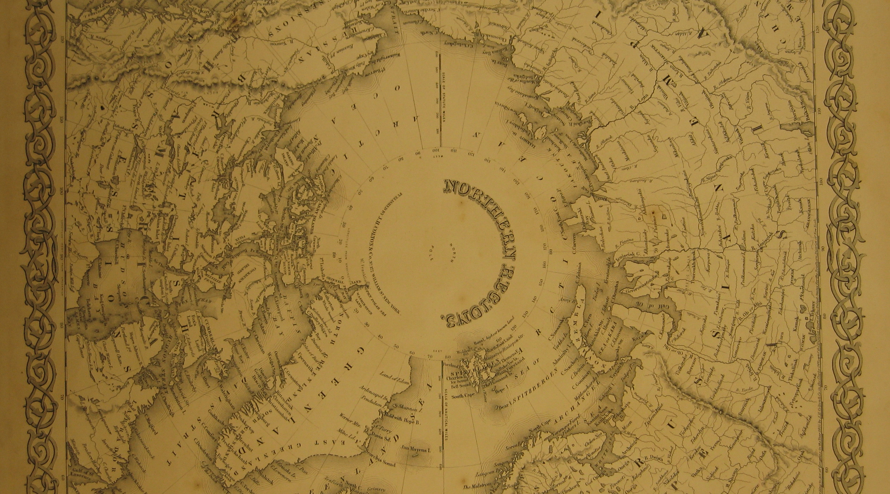

The Polar Ocean
The Polar Ocean is one of the most inhospitable places on earth. It freezes into
an ice cap every winter and thaws every summer. NASA measures the maximum
ice extent of the ice cap every year. This year the maximum ice extent was the
smallest in recorded history.